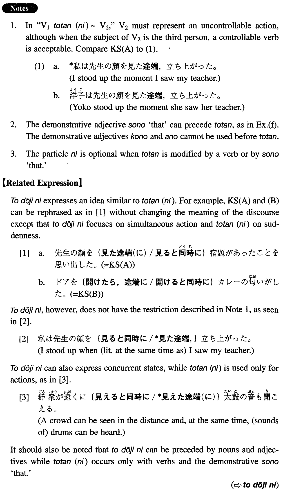

←
DoJG
→
途端（に）
(I. 525)
Example sentences
(ksa).
先生の顔を見た
途端（に）
宿題があったことを思い出した。
The moment I saw my teacher, I remembered that there was a homework assignment.
(ksb).
ドアを開けたら、
途端に
カレーの匂いがした。
The moment I opened the door, I smelled curry.
(a).
部屋に入った
途端（に）
電話が鳴った。
Just as I entered my room, the telephone rang.
(b).
その日本の写真を見た
途端（に）
家族に会いたくなった。
I wanted to see my family the moment I saw that Japanese photograph.
(c).
彼女は私の顔を見た
途端（に）
泣き出した。
As soon as she saw me, she started to cry.
(d).
コンセントを差し込んだら、
途端に
家中の電気が消えた。
The moment I put the plug in, all the lights went out in the house.
(e).
その牛乳を飲んだら、
途端に
腹が痛み出した。
As soon as I drank the milk, my stomach started to ache.
(f).
助かったと思った。その
途端（に）
、力が抜けて気を失ってしまった。
I thought I was saved; then (literally: at that moment), my strength was gone and I lost consciousness.
Formation
(i)
Vinformal past
途端
(
に
)
座った
途端
(
に
)
The moment someone sat down
(ii)
Vinformal pastら
途端に
食べたら、
途端に
The moment someone ate something
